3.2.1. 基本編#
3.2.1.1. 初期姿勢遷移#
初期姿勢へ遷移させる方法を説明します。 初期姿勢には2種類あり、これらの姿勢遷移は自己干渉を避けて行われます。
移動の際に手先が邪魔にならない姿勢
In []: whole_body.move_to_go()
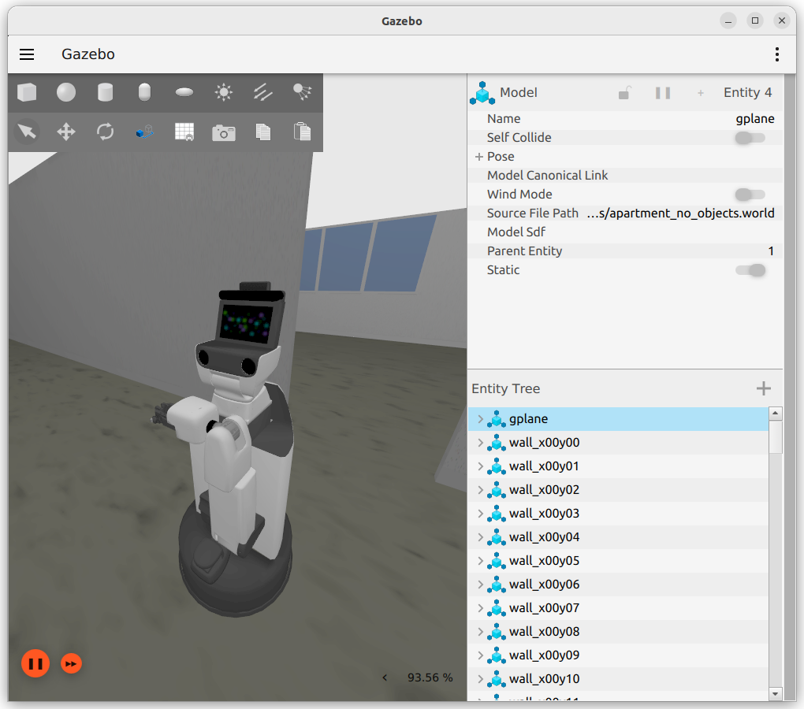
認識やアームの動作をさせやすい自然な姿勢
In []: whole_body.move_to_neutral()
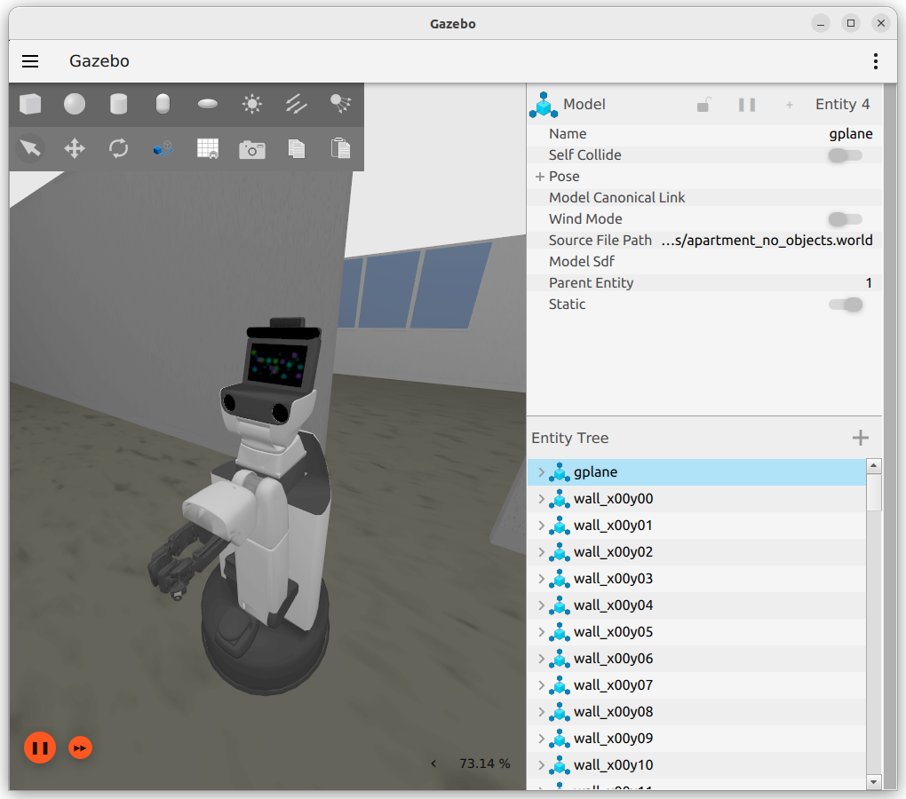
{kind=link}
{kind=link}
3.2.1.2. 関節駆動#
関節を任意の角度へ動かすためのコマンドについて説明します。
以下を実行し、HSRにどのような関節があるか確認してください。
In []: whole_body.joint_names
関節のリストが表示されます。なお、このコマンドでは動かせない関節も一部存在します。
Out[]: ['arm_flex_joint', 'arm_roll_joint', 'wrist_flex_joint', 'wrist_roll_joint', 'head_tilt_joint', 'base_l_drive_wheel_joint', 'base_roll_joint', 'arm_lift_joint', 'hand_motor_joint', 'head_pan_joint', 'base_r_drive_wheel_joint', 'hand_l_spring_proximal_joint', 'hand_r_spring_proximal_joint']
以下に、本インターフェースで動作可能な関節を記載します。
番号
ジョイント名
タイプ
軸方向
可動範囲
備考
1
arm_lift_joint直動
z
0.0～0.69[m]
2
arm_flex_joint回転
-y
-2.617～0.0[rad]
-150～0[deg]
3
arm_roll_joint回転
z
-1.919～3.665[rad]
-110～210[deg]
4
wrist_flex_joint回転
-y
-1.919～1.221[rad]
-110～70[deg]
5
wrist_roll_joint回転
z
-1.919～3.665[rad]
-110～210[deg]
6
head_pan_joint回転
z
-3.839～1.745[rad]
-220～100[deg]
7
head_tilt_joint回転
-y
-1.570～0.523[rad]
-90～30[deg]
以下を実行し、直動軸を動作させてください。 単位は[m]です。
In []: whole_body.move_to_joint_positions({'arm_lift_joint': 0.2})
引数はPythonの辞書で与えるため、
{}で囲むことを忘れないようにしてください。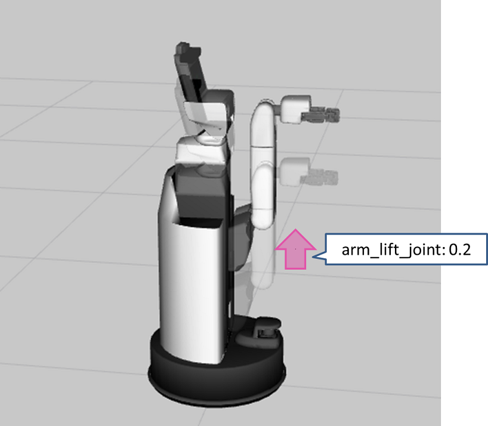
以下を実行し、首を動作させます。単位は[rad]です。
In []: whole_body.move_to_joint_positions({'head_pan_joint': 0.4, 'head_tilt_joint': -0.2})
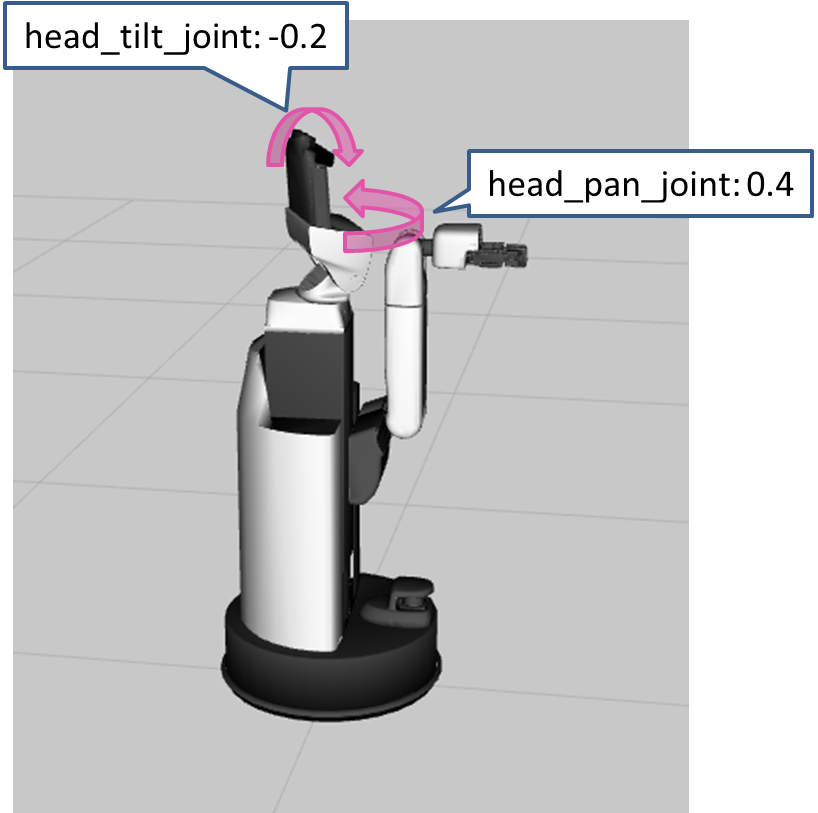
以下を実行し、目標姿勢を複数組指定して動作させてください。
In []: whole_body.move_to_joint_positions_multiple_targets(['arm_lift_joint', 'arm_flex_joint', 'wrist_flex_joint'], [[0.4, -0.2, -1.57], [0.2, -1.0, 0.0]])
いずれかの目標姿勢に動作したことを確認してください。
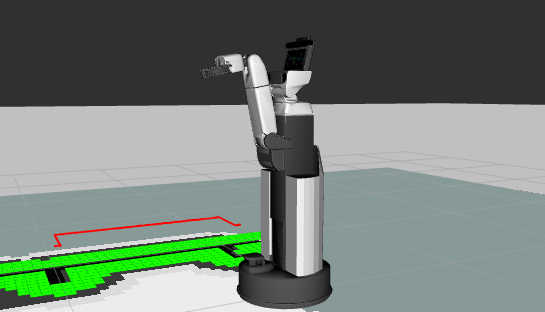
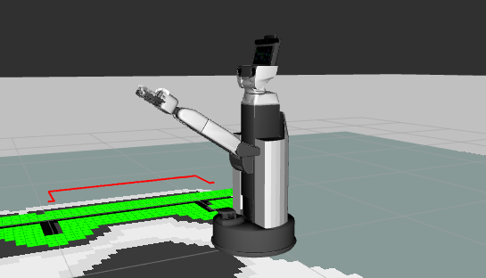
このコマンドの引数は、１つ目に動かしたい関節のリスト、２つ目にその目標値の組み合わせのリストを指定します。実現可能な姿勢からランダムに選択されますが、現在の姿勢から近い目標姿勢が選択される傾向にあります。
{kind=link}
{kind=link}
{kind=link}
{kind=link}
3.2.1.3. Xtionの向きの変更#
Xtionを任意の位置に向けることができます。 ただし、自己干渉が発生する場合は、その姿勢には移行しません。
例えば、以下のように実行すると、まず初期姿勢に遷移したあと、「base_link」を基準に「point」の方向を向きます。
In []: whole_body.move_to_neutral()
In []: whole_body.gaze_point(point=geometry.Vector3(x=1.0, y=-0.5, z=0.3), ref_frame_id='base_link')
{kind=link}
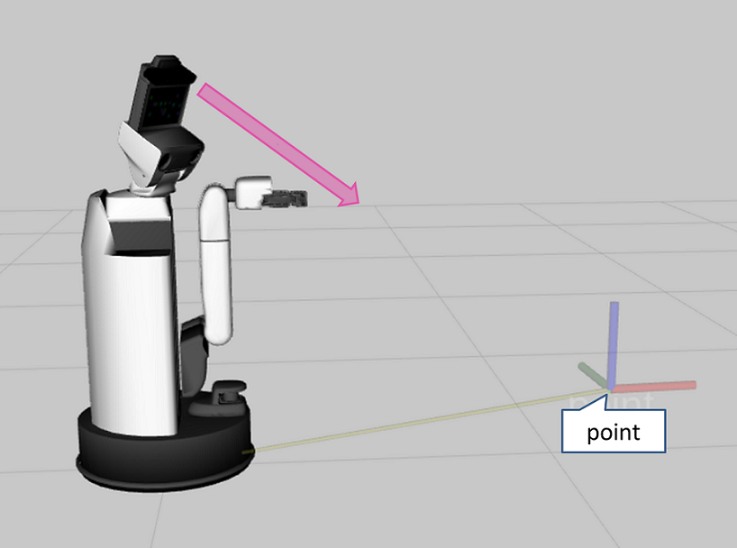
3.2.1.4. ハンド駆動#
ハンド駆動には、他の関節とは異なるコマンドを使います。
3.2.1.4.1. 開き角度指定#
gripper.command はグリッパの開き角度[rad]をコントロールするコマンドです。
開いた状態（1.2 [rad]）
In []: gripper.command(1.2)
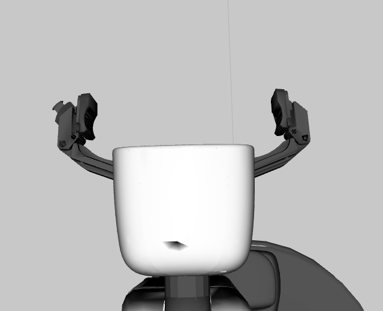
閉じた状態（0.0 [rad]）
In []: gripper.command(0.0)
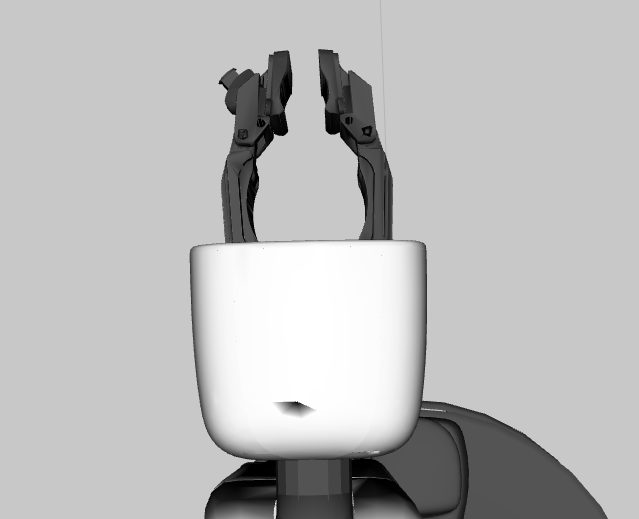
{kind=link}
{kind=link}
3.2.1.4.2. 指先間距離指定#
gripper.set_distance により指先間距離[m]を指定することができます。
なお、指先間距離は 0.0 ~ 0.135[m] の範囲で設定してください。
In []: gripper.set_distance(0.05)
{kind=link}
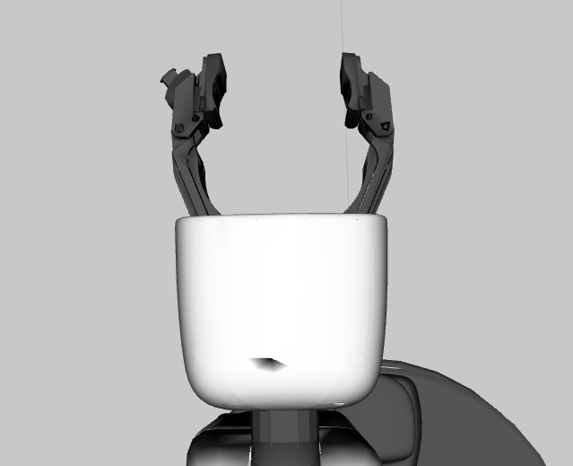
3.2.1.4.3. 力指定#
重要
手先が振動することがあります。
その場合、 gripper.apply_force の値を小さくしてください。
gripper.apply_force により握りこむことができます。
大きさが未知のものを把持する場合などはこちらを推奨します。 大きさの目安は1.0[N]程度です。
In []: gripper.apply_force(1.0)
3.2.1.5. 手先基準での動作#
ものを掴む時などに手先の姿勢を指定してHSRを動かす方法について説明します。 以下を実行してリファレンスを確認してください。
In []: whole_body.move_end_effector_pose?
Signature: whole_body.move_end_effector_pose(pose, ref_frame_id=None, plan_only=False)
Docstring:
Move an end effector to a given pose.
Args
pose (geometry.Pose or list(geometry.Pose)):
The target pose(s) of the end effector frame.
ref_frame_id (str): A base frame of an end effector.
The default is the robot frame(```base_footprint``).
plan_only (bool):
Not execute the trajectory when this arg is ``True``
Returns:
constrained_traj (trajectory_msgs.msg.JointTrajectory):
A planned trajectory
File: ~/hsr_ros2_ws/install/hsrb_interface_py/local/lib/python3.10/dist-packages/hsrb_interface/joint_group.py
Type: method
「pose」には手先の姿勢を、「ref_frame_id」には基準となる座標を入れます。
手先の姿勢には、複数の姿勢をリストにして入れることができます。
基準座標には、tfで解決可能な座標系を指定する必要があります。
例えば以下のようにすると、初期姿勢にした後、手先をz方向に1.0[m]進めた位置に腕を伸ばします。
In []: whole_body.move_to_neutral()
In []: whole_body.move_end_effector_pose([geometry.pose(z=1.0)], ref_frame_id='hand_palm_link')
geometry.pose() は姿勢を作る関数で、細かく指定することなくz方向に1.0[m]といった姿勢を表現出来ます。
{kind=link}
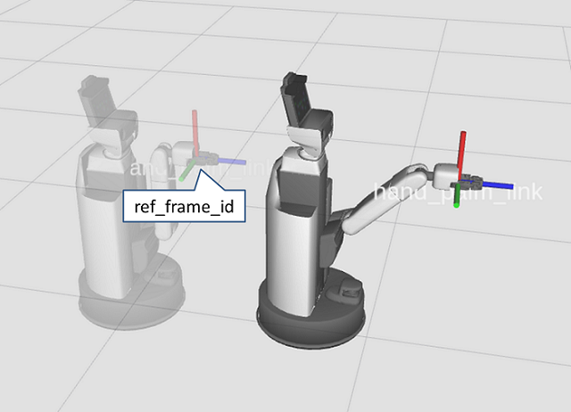
3.2.1.6. 手先直線動作#
手先を手先座標系のz軸に沿って0.3[m]動作させます。 以下を実行してください。
In []: whole_body.move_to_neutral()
In []: whole_body.move_end_effector_by_line((0, 0, 1), 0.3)
引数は、以下のようになっています。
Args:
axis (Vector3): A axis to move along with
distance (float): Distance to move [m]
ref_frame_id (str):
[DEPRECATED] The frame name of the target end effector.
``axis`` is defined on this frame.
plan_only (bool):
Not execute the trajectory when this arg is ``True``
{kind=link}
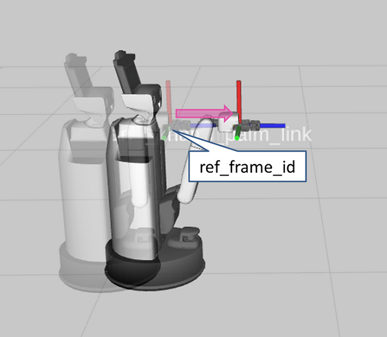
3.2.1.7. 手先円弧軌道動作#
以下を実行し、手先を円弧軌道に沿わせて動作させてください。
ここでは回転中心を、「hand_palm_link」基準でy軸方向に0.45[m]、z軸方向に0.08[m]移動し、y軸基準で90[deg]回転させた座標系としています。 この座標系のz軸を回転軸とした円弧軌道に沿って、60[deg]動きます。
In []: whole_body.move_to_neutral()
In []: whole_body.move_end_effector_by_arc(geometry.pose(y=0.45, z=0.08, ej=math.radians(90.0)), math.radians(60.0), ref_frame_id='hand_palm_link')
引数は、以下のようになっています。
Args:
center (Tuple[Vector3, Quaternion]):
A center pose of rotation. The z axis is used as rotation axis.
angle (float): Angle to move [rad]. The range is (-PI, PI)
ref_frame_id (str): A base frame of an end effector.
The default is the robot frame(```base_footprint``).
plan_only (bool):
Not execute the trajectory when this arg is ``True``
{kind=link}
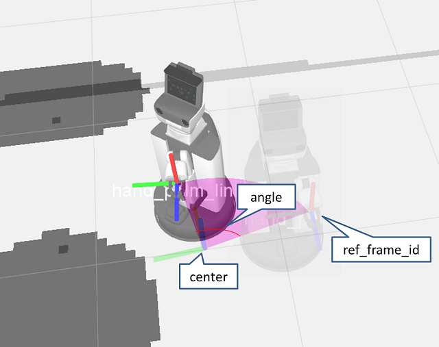